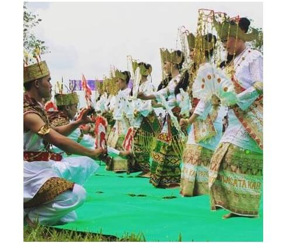
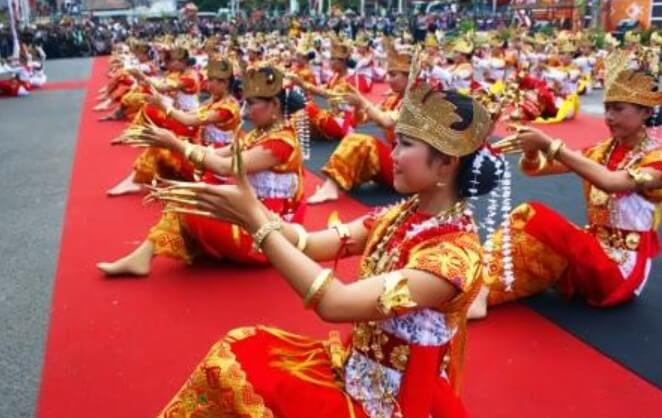
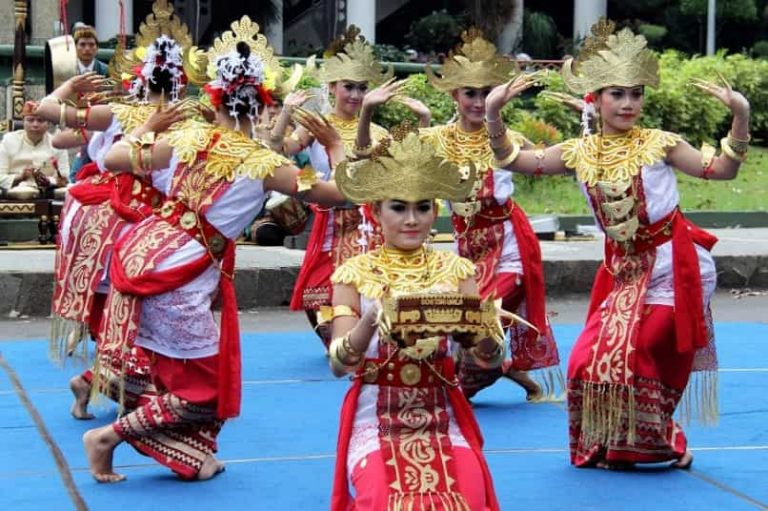
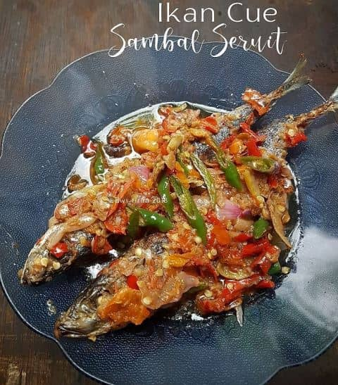
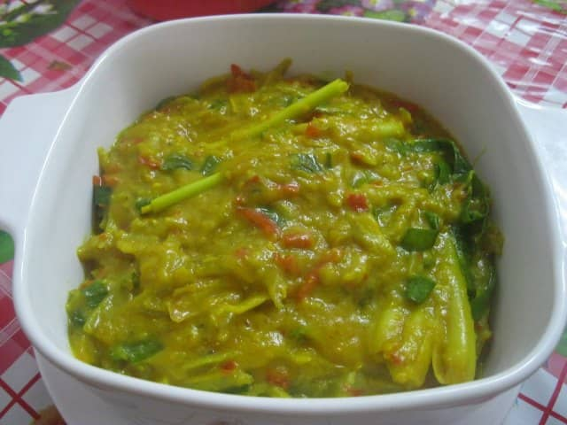
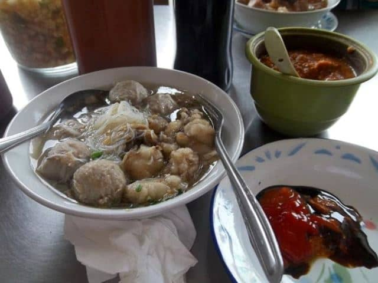

About Us
Budaya
1. Seni Tari
Tarian Lampung diketahui mempunyai banyak jenis dan ragam. Secara turun-temurun, tarian yang ada di provinsi Lampung diwariskan. Pertunjukan di acara-acara tertentu baik itu acara adat maupun acara-acara penampilan budaya, menjadi wadah untuk mempersembahkan tarian itu.
Tari Melinting
Tari melinting, yang merupakan tari tradisional pertama dari Lampung, memiliki sejarah panjang sebagai bagian dari warisan budaya. Tarian ini telah ada sejak zaman Islam pertama kali tiba di Indonesia. Biasanya, tarian ini dipentaskan dalam berbagai acara adat dan upacara serupa. Awalnya, pertunjukan tarian ini hanya terbatas untuk keluarga dan lingkungan kerajaan. Namun, sejak tahun 1958, tari melinting telah berkembang menjadi tarian rakyat yang lebih luas diakses oleh seluruh masyarakat Lampung. Tarian ini ditarikan oleh pemuda dan pemudi Lampung, dengan sekitar delapan penari yang terlibat, terdiri dari empat perempuan dan empat laki-laki.
Tari Bedana
Tarian ini sudah ada sejak masuknya Islam ke Indonesia. Pada mulanya hanya diselenggarakan ketika ada keluarga yang baru saja hatam Alquran. Tetapi dengan perkembangan waktu dari masa kemasa, tari Bedana ini bisa dinikmati oleh setiap kalangan di Lampung secara terbuka. Adapun makna dari tarian Bedana ini adalah ajaran Islam yang mencerminkan sisi kehidupan dan Sisi masyarakat Lampung. Tari Bedana juga sangat akrab dan ramah. Selain itu juga digunakan sebagai simbol persahabatan dan juga pergaulan anak remaja di daerah Lampung. Tarian ini juga merupakan ekspresi perasaan gembira dan sukacita yang sangat mendalam dengan iringan musik gamelan khas Jawa.
Tari Sigeh Pengunten
Tari Sigeh Pengunten dimanah tarian ini begitu populer di Lampung hingga saat ini dan menjadi yang paling utama ketika penyambutan tamu maupun resepsi pernikahan. Dari tarian adat lampung dan penjelasannya, bisa diketahui bahwa nuansa yang ada dalam tarian ini ialah kegembiraan karena adanya tamu yang datang ke acara. Selain berfaedah untuk tarian penyambutan, tari ini juga dilakukan sebagai bukti ucapan rasa terima kasih yang telah hadir ke acara. Adapun penari yang membawakan tari ini harus berjumlah ganjil dimulai dari jumlah 5, 7, 9, 11 dan seterusnya. Yang membuat unik tarian ini adalah salah satu penari membawa tepak. Tepak sendiri merupakan sebuah kotak berwarna kuning keemasan yang isinya daun sirih yang akan diberikan kepada tamu. Tarian ini diiringi oleh lantunan alat musik khas dari adat Lampung.
2. Makanan Tradisional
Makanan khas Lampung - Lampung secara luas dikenal sebagai tempat di mana Anda dapat menemukan hidangan-hidangan khas yang sangat lezat. Oleh karena itu, saat Anda mengunjungi Lampung, sangat disarankan untuk tidak melewatkan kesempatan mencoba hidangan lezat dan berbagai kue tradisional khas Lampung.
Seruit
Seruit adalah salah satu hidangan khas Lampung yang biasanya disajikan dalam berbagai acara seperti acara keluarga, pernikahan, upacara adat, dan acara keagamaan. Selain itu, masyarakat Pepadun juga sering mengonsumsi seruit sebagai makanan sehari-hari. Seruit terbuat dari ikan bakar yang dicampur dengan berbagai jenis sambal terasi yang khas di kota Bandar Lampung, seperti sambal tempoyak, dan terkadang juga ditambahkan potongan mangga. Meskipun ada berbagai jenis ikan yang dapat digunakan untuk membuat seruit, ikan yang paling umum digunakan adalah ikan sungai seperti baung, balide, layis, dan lainnya. Saat menyantap seruit ini, biasanya disajikan dengan lalapan untuk memberikan rasa yang lebih nikmat dan lezat.
Tempoyang
Bakso Sony
Bakso merupakan salah satu makanan yang paling banyak diminati di Indonesia. Nah, bagi anda yang tidak mengetai bakso khas Lampung, sebaiknya segera mencari tahu dan langsung mencicipinya. Karena bakso yang ada dilampung atau juga dikenal dengan bakso Sony ini sudah sangat terkenal dengan rasanya yang cukup lezat dan nikmat. Bakso khas Lampung ini terbuat dari daging sapi asli yang masih segar dan juga mempunyai tekstur yag kenyal. Dalam proses pembuatan bakso Sony ini juga ditambahkan lada hitam didala kuahnya sehingga dapat membuat rasanya sangat gurih.